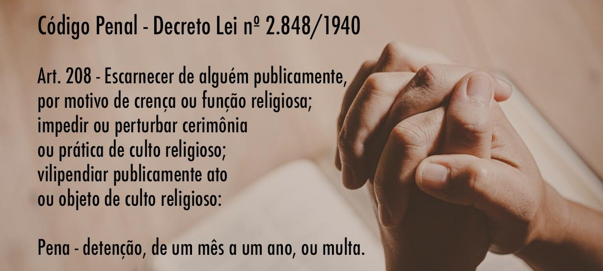

Como denunciar a perseguição religiosa?
Denunciar a perseguição religiosa pode ser um passo importante para chamar a atenção para essas violações dos direitos humanos e buscar ajuda. Aqui estão algumas etapas que você pode considerar ao denunciar a perseguição religiosa:
1. Documente Evidências: Colete informações detalhadas sobre incidentes de perseguição, incluindo datas, locais, testemunhas e descrições precisas do que ocorreu. Fotos, vídeos ou documentos também podem ser úteis como evidências.
2. Contate Organizações de Direitos Humanos: Entre em contato com organizações de direitos humanos locais e internacionais que se dedicam a combater a perseguição religiosa, como a Anistia Internacional, Human Rights Watch ou organizações religiosas específicas.
3. Informe as Autoridades Locais: Se sentir que a situação pode ser resolvida localmente, informe as autoridades governamentais, policiais ou agências responsáveis pelos direitos humanos em seu país.
4. Use a Mídia e Redes Sociais:Compartilhe informações sobre a perseguição religiosa nas redes sociais para aumentar a conscientização. Se apropriado e seguro, envolva a mídia local e internacional para relatar os incidentes.
5. Fale com Líderes Religiosos:Converse com líderes religiosos e membros de sua comunidade para buscar apoio e orientação. Eles podem ajudar a mobilizar esforços para combater a perseguição religiosa.
6. Informe Organizações Internacionais: Se a perseguição for grave e sistemática, informe organizações internacionais, como as Nações Unidas, que têm mecanismos para lidar com violações dos direitos humanos em nível global.
7. Mantenha-se Seguro: Se você ou outras pessoas estiverem em perigo devido à sua denúncia, tome medidas para garantir sua segurança e a segurança das pessoas envolvidas.
Lembre-se de que a perseguição religiosa é uma violação séria dos direitos humanos, e é importante trabalhar em conjunto com outras pessoas e organizações para combatê-la de maneira eficaz e segura.